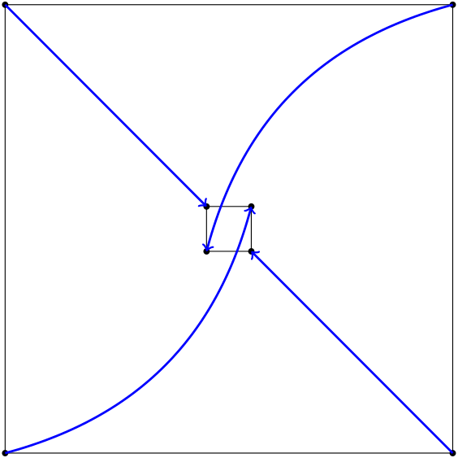

Calibrated Click-Through Auctions: An Information Design Approach（校准的点击通过拍卖：信息设计视角）
- 会议/期刊: WWW 2022
- 作者与机构: Dirk Bergemann (Yale University)，Paul Duetting、Renato Paes Leme、Song Zuo (Google Research)
- 推荐链路定位: 精排/机制设计（排名打分与信息结构）
- 研究方向: CTR/CVR 预估与特征交叉 / 信息设计
- 论文原文: arXiv:2105.09375v1
- 开源代码: 暂未开源
TL;DR（1分钟核心速览）
现代点击通过拍卖按 \(v_i\hat{r}_i\)排序，但平台对 CTR 的信息披露粒度才是收益的真正杠杆。本文在 GSP 机制固定、每点击估值已知的设定下，将排序得分约束为校准意义下的无偏 CTR 估计量（\(\mathbb{E}[r_i\mid s_i]=s_i\)），从而把"最优信息结构设计"等价地转化为"最优无偏估计量设计"。主要结论：独立校准信号收益不会超过零披露（Prop 3.1），完全披露严格劣于零披露（Cor 3.2）；而一旦允许私密且相关的校准信号，在对称\(n\)竞价人环境中即可构造出趋近完全剩余榨取的结构（Thm 4.1，如两竞价人"翻转正方形"示例收益\(7/8-O(\epsilon)\)，优于零披露的\(3/4\)）。
Background & Motivation（背景与核心矛盾）
- 主流范式: 广告/推荐的精排打分长期沿用广义第二价格拍卖（GSP），排名分数为 \(v_i \cdot \hat{r}_i\)；Edelman-Varian 在完整信息下证明其竞价均衡可复现 VCG 的社会效率与支付。
- 前人局限: ① 完整披露全部 CTR 使"赢家恒强、弱竞价人报价贴近均值"的竞争消失，收益可能极低；② 零披露虽保持竞争，但胜者可能与真实 \(r\) 顺序不符，社会效率严重损失；③ Lahaie-Pennock 等人通过"压扁/抬升" CTR 提升收益，但破坏了校准性，导致打分偏离无偏估计。
- 核心洞察 (Key Insight): 收益-效率权衡的根源不是预估精度，而是信息发布结构。校准约束保证排序得分始终是无偏 CTR 预测，平台可以在此几何约束内自由设计信号的联合分布 \(\rho(s,r)\) 来"人为制造竞争"（即 Levin-Milgrom 的 conflation 思想）。
- 本文切入点: 固定 GSP 规则与出价策略，仅优化信息结构 \(\rho\)，把机制设计问题降维为估计量设计问题。
Method（核心方法设计）
1. 整体框架 (Overall Architecture)
平台观测到真实 CTR 向量 \(r\sim G\)与各竞价人每点击估值\(v_i\)，选择一个联合分布\(\rho(r,s)\)（\(r\)-边缘等于\(G\)），向每个竞价人私下发送信号\(s_i\)；GSP 按\(v_i s_i\)选胜者并按$\max_{j\ne i^} v_j s_j / s_{i^} \(计价，期望收益为\)\mathbb{E}[r_{i^}\cdot p_{i^}]$。设计目标是：在逐竞价人校准约束下最大化期望收益，并刻画最优结构与"效率-剩余"能否同时达成。
flowchart TD
A["真实 CTR 向量 r ~ G，出价 v 已知"] --> B["设计联合分布 ρ(r,s) 满足逐投标人校准"]
B --> C["私密+相关信号 s_i 分发竞价人"]
C --> D["GSP 排序 max_i v_i s_i"]
D --> E["按第二高价计费，得期望收益"]
E --> F["最大化 E[r·p(s)]，逼近社会剩余"]2. 关键设计拆解 (Key Designs)
-
校准约束与信息结构等价性：独立信号结构 \(\mathbb{E}[r_i|s_i=s'_i]=s'_i\)被写成线性约束\(\sum_{(r,s):s_i=s'_i} x(r,s)(r_i-s'_i)=0\)。全披露（\(s_i=r_i\)）与零披露（\(s_i=\mathbb{E}[r_i]\)）都是校准结构，这给平台留下"部分捆绑 (partial bundling)"的连续设计空间——既保证排序得分无偏，又可控制事后信念的方差以调节竞争强度。
-
"翻转正方形"相关结构（对称两竞价人）：当 \(r\in\{1/2,1\}^2\)独立均匀时，独立校准无法超越零披露的\(3/4\)收益；而将对称对角像\((\tfrac12,\tfrac12)\mapsto(\tfrac34+\epsilon,\tfrac34+\epsilon)\)、\((1,1)\mapsto(\tfrac34-\epsilon,\tfrac34-\epsilon)\)顺序反转（\(\epsilon\)-流），非对角像\((\tfrac12,1)\mapsto(\tfrac34-\epsilon,\tfrac34+\epsilon)\)保序，即得到校准、相关的信号分布。收益为\(\tfrac{1}{4}\cdot\tfrac12+\tfrac{1}{2}\cdot\tfrac{3/4-\epsilon}{3/4+\epsilon}+\tfrac14\to 7/8-O(\epsilon)\)，几乎等于社会剩余\(\mathbb{E}[\max_i v_i r_i]\)。

- "沿对角线分散"推广与训练目标：一般对称环境用信号网格 \(s_k=s_0(1+\delta)^k\)（\(s_0=(l+h)/2\)，\(k\in[-K,K]\)）与递推系数\(x_k=x_{k-1}\frac{h-s_k}{s_k-l}\)逐点满足校准；通过\(K=\sqrt{\epsilon}/\log_{1+\epsilon}(\cdot)\)使端点质量\(x_K,z\to 0\)，收益收敛到\(vh-\epsilon\)（Lemma 4.2）。组合引理 4.4（信号可加性）将一般分布拆成二元"高-低配对"，合成后总收益线性叠加，从而把结果扩展到任意对称\(n\)人环境。无训练损失：这是离线解析构造，推理时仅需采样一次\(\rho(s|r)\)，不引入额外在线开销。
Experimental Setup & Evaluation Protocol（实验设置与评估协议）
本文为纯理论/信息设计论文，无传统推荐系统数据集实验。评估发生在解析构造的数值示例与命题-证明层面，故不存在 Leave-One-Out、Full-Ranking 或负采样设置。以下用理论示例的设定替代常规数据集表：
| 示例 | 竞价人数 | CTR 分布 \(G\) | 候选结构与收益 | 说明 |
|---|---|---|---|---|
| 翻转正方形 (§4.1) | 2 | \(r\in\{1/2,1\}^2\)独立均匀 | 零披露\(3/4\)；相关信号\(\to 7/8-O(\epsilon)\) | 展示相关信号增益 |
| 对角分散 (§4.2) | 2 | \(\{(1/2,1),(1,1/2)\}\)各\(1/2\) | 全披露\(1/2\)；零披露\(3/4\)；相关\(0.79\) | 展示部分分散优于两端 |
| 三竞价人 (§3.2) | 3 | \(r_i\in\{0,1\}\)，\(P(1)=1/3\)独立 | 全披露\(7/27\)；零披露\(9/27\)；部分披露\(3/8\) | 证明\(n>2\) 时独立信号可超越两端 |
- 对比基线: 两类极端信息结构——零披露与完全披露；以及"独立校准信号"这一受限类（对应 Prop 3.1/Cor 3.2）。
- 理论保证: 主要结果以严格证明（含 Jensen 不等式、Chebyshev 和不等式、递推构造）给出，误差项显式写成 \(O(\epsilon)\)或\(O(\sqrt{\epsilon})\) 形式。
Key Experimental Results（关键实验数据）
1. 主实验对比 (Main Results)
理论命题与数值示例的主对照如下（收益按"每点击单位价值"归一化，\(v_i\equiv 1\)）：
| 结果 | 环境与假设 | 结论 / 数值 | 相对最优结构 |
|---|---|---|---|
| Prop 3.1 | 2 竞价人、独立校准信号 | 收益 \(\le\) 零披露 | 严格劣于相关结构 |
| Cor 3.2 | 2 竞价人、完全披露 vs 零披露 | 完全披露严格 \(<\)零披露（当\(v_1r_1\gtrless v_2r_2\) 均以正概率出现） | 反直觉结论 |
| §3.2 示例 | 3 竞价人，\(v=1\)，\(r_i\in\{0,1\}\)，\(P(1)=1/3\) | 部分披露\(3/8=0.375\)vs 零披露\(9/27\approx0.333\)vs 全披露\(7/27\approx0.259\) | +12.5% vs 零披露，+44.7% vs 全披露 |
| Thm 4.1 翻转正方形 | 2 竞价人，\(r\in\{1/2,1\}^2\)独立 | 相关校准结构 \(7/8-O(\epsilon)\)，零披露\(3/4\) | +16.7%，逼近完全剩余 |
| Lemma 4.2 对角分散 | 2 竞价人，\((l,h)/(h,l)\)各\(1/2\) | 相关结构\(0.79\)，全披露\(1/2\)，零披露\(3/4\) | +5.3% vs 零披露，+58% vs 全披露 |
| Thm 5.2 | 非对称、统一赢家/同向输家/弱竞争 | 最优 = 捆绑赢家 + 解捆输家（适度结构） | 收益 \(=\frac{pr_1r_2+(1-p)r'_1r'_2}{\mu_1}\) |
| Prop 5.4 | 统一赢家、非同向输家 | 最优为内点结构：同时部分捆绑赢家与输家 | 严格优于所有极端结构 |
2. 消融实验 (Ablation Study)
产品化的消融对应"去掉任一结构性质后的收益损失"：
| 变体 | 收益 | 说明 |
|---|---|---|
| Full（对称对称校准+相关结构） | \(7/8-O(\epsilon)\) | 基准 |
| w/o 相关性（限制为独立信号） | \(3/4\) | 退回零披露，差异\(-16.7\%\) |
| w/o 私密性（公共信号） | \(<7/8\) | 无法逐竞价人调节竞争 |
| w/o 校准（启发式压/抬 CTR） | 无上界保证 | 排序有偏，效率失真 |
| w/o 部分捆绑（仅极端策略） | \(\le 3/4\) | 退化为零/全披露之一 |
3. 关键实验发现 (Key Findings)
- "更准的 CTR 未必带来更高收益"：Cor 3.2 严格证明完全披露在双竞价人下劣于零披露，说明平台对 CTR 预测精度的边际投资回报可能为负——信息结构而非预估模型才是收益杠杆。
- 相关性的量化增益约 16.7%：翻转正方形示例从零披露 \(3/4\)到\(7/8-O(\epsilon)\)，且该增益完全来自"跨竞价人信号相关"，独立校准信号被 Prop 3.1 封顶在零披露水平。
- 非对称环境"给弱者加信息"：Thm 5.2 表明在弱竞争时最优策略是捆绑赢家、解捆输家（收益较极端结构严格更高），与"信息公开越多越好"的直觉相反——信息是调节竞争的杠杆而非越多越好。
Highlights & Limitations（亮点、对比与审稿批判）
- 与代表作对比 (vs. Prior Work): 与 Edelman/Varian (2007) 的完整信息 GSP 均衡相比，本文让 CTR 变为随机变量并引入信息披露设计；与 Lahaie-Pennock (2007) / Mahdian-Sundararajan (2015) 的"压/抬 CTR"启发式相比，本文把校准设为硬约束并给出最优结构；与 Bergemann-Pesendorfer (2007) 联合优化机制+信息不同，本文固定 GSP，更贴合工业界实际机制。
- 可迁移亮点: ① "校准约束 \(\Rightarrow\) 排序得分必须无偏"这一规范可直接写入推荐/广告精排的打分规范，防止线上模型为提收益而故意扭曲打分；② "相关信号 + 部分捆绑"可用于多业务方博弈场景的信息分发策略，如多广告主曝光率竞争、竞价调解 (bid shading) 平台侧建议。
- 审稿级局限批判: ① 纯理论、无 A/B 实测，工业界更关心有限样本下经验校准误差对结论的削弱；② 假设出价 \(v_i\) 完整已知且竞价人为风险中性、策略均衡，与真实广告主出价行为差距大；③ 最优结构刻画是非构造的：一般非对称环境下仅证明"适度/内点结构存在"，缺少可直接实现的算法。
Rating（四维评分）
- 方法创新性 (Novelty): ⭐⭐⭐⭐⭐ （把广告拍卖的"信息设计"与"校准无偏估计"两条线结合，证明私密相关信号可逼近完全剩余，机制与证明都相当新颖）
- 评估协议与实验扎实度 (Protocol & Experiments): ⭐⭐⭐ （无实证数据集、无 A/B、无数值仿真，仅靠解析示例与严格证明支撑，属典型理论论文的评价方式）
- 写作与数学规范度 (Clarity & Rigor): ⭐⭐⭐⭐ （命题-例子-定理层层递进，翻转正方形图与对角分散图直观；部分附录构造参数（\(\epsilon,\delta,K,x_0\)）依赖较多，阅读成本偏高）
- 工业落地与复现价值 (Industrial & Practical Value): ⭐⭐⭐ （无开源代码、无在线实验；但"校准打分"约束与"信息捆绑"思想可直接迁移到广告/推荐排序与竞价调解策略）